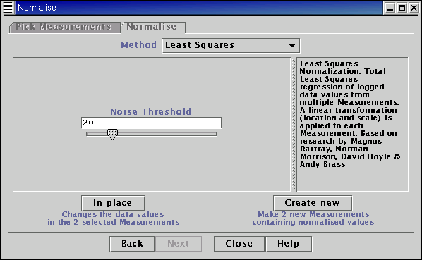

See the Plugin Commands help page for details on the commands offered by this plugin.
The Least Squares normalisation algorithm is a location and scale transformation method applied to the logged data, similar in operation to the Geometric Mean normalisation method. It is applied to multiple Measurements. The data passed to the algorithm is logged (logarithms to base e taken). Each Measurement is considered to correspond to a linear transformation of a "reference data set". The transformation parameters (slope and intercept) for each Measurement are calculated and the inverse transformation applied to obtain the normalised data. Rather than using a single hybridisation to act as the "reference data set", this is determined collectively from all the Measurements that have been selected for normalisation. This acts as a more robust method than subjectively choosing a single hybridisation to which to compare all others.
The "reference data set" is taken to have a mean of zero and standard deviation of 1. Thus the normalised logged data will have a mean of zero and a standard deviation of approximately 1. This can be useful when comparing biological data sets whose ranges of expression are expected to be of comparable size. Note that if the Least Squares normalisation method is applied to ratio data (i.e. ratios of intensities) the normalised values DO NOT represent normalised log-ratios. Exponentiating the normalised value will not give a fold-change. The normalised values represent values that can be used (with other data sets) to detect differential expression.
NotesAll logarithms used are natural logarithms, i.e. logarithms to base e. The normalied values returned are normalised logged data, transformed to a mean of zero and standard deviation of approximately 1.
If you wish to apply the Least Squares method to ratios of intensities, you must calculate the ratios first (e.g. using the "Simple Maths" menu option on the "Transform" menu) before using the normalisation algorithm.
For more details see the technical report DNA microarray normalisation, PCA and a related latent variable model
Select Measurements to normalise from the list on the left-hand side of the panel.

Set the noise threshold. Un-normalised data values below the noise threshold will be set to the threshold.
Choose whether to create new Measurements in the main table, or overwrite the Measurements selected with the normalised data.